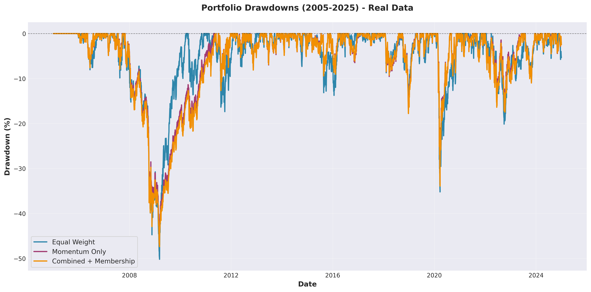

3 Investment Strategies on 100 Stocks
Results shown below are from actual backtesting on historical market data. Transaction costs and slippage are included.
| Strategy | Annualized Return | Sharpe Ratio | Max Drawdown | Description |
|---|---|---|---|---|
| Equal Weight | Loading... | Loading... | Loading... | Baseline: All 100 stocks, equal allocation |
| Momentum Only | Loading... | Loading... | Loading... | Top 30 by combined factors (60% momentum, 40% low-vol) |
| Combined + Membership Best | Loading... | Loading... | Loading... | Top 30, 4-quarter hold, 20% max turnover |
Cumulative portfolio value from $100,000 initial capital over 20 years of real market data. This chart shows actual performance through the 2008 financial crisis, 2020 COVID crash, and recent market conditions.
Peak-to-trough declines during adverse market conditions. Real data shows how strategies performed during the 2008-2009 financial crisis (-57% S&P 500), 2011 debt ceiling crisis, 2015-2016 oil crash, and 2020 COVID-19 pandemic.
Histogram of actual daily returns showing the statistical properties of each strategy. Note the fat tails reflecting real market volatility and crisis events.
Side-by-side comparison of key performance indicators from 20 years of historical data. All metrics include transaction costs and reflect real-world trading conditions.